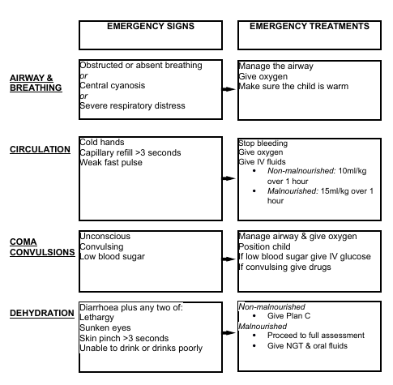

Triage
Definition
This is the process of rapidly screening sick children on arrival to hospital. The aim is to reduce deaths within the first 24 hours of admission.
In our department this is done by the triage nurse at the desk in front of room 1. The health passport is stamped E (emergency), P (priority) or Q (queue).
Categories
- Emergency: patients who require life-saving treatment. Transfer immediately to resuscitation room.
- absent or obstructed breathing
- severe respiratory distress
- central cyanosis
- signs of shock (cold hands plus capillary refill longer than 3 seconds plus weak, fast pulse)
- coma
- convulsions
- signs of severe dehydration in a child with diarrhoea (lethargy, sunken eyes, very slow return after pinching the skin - any two of these).
- Priority: patients who should be given priority in the queue. These children are at higher risk of dying, so they should be assessed and treated without delay.
3 TPR MOB
- Tiny baby: any sick child aged under 2 months
- Temperature: child is very hot
- Trauma or other urgent surgical condition
- Pallor (severe)
- Poisoning
- Pain (severe)
- Respiratory distress
- Restless, continuously irritable, or lethargic
- Referral (urgent)
- Malnutrition: visible severe wasting
- Oedema of both feet
- Burns (major)
- Queue: patients who have neither emergency nor priority signs.

Reference:
WHO Pocket book of Hospital Care for Children